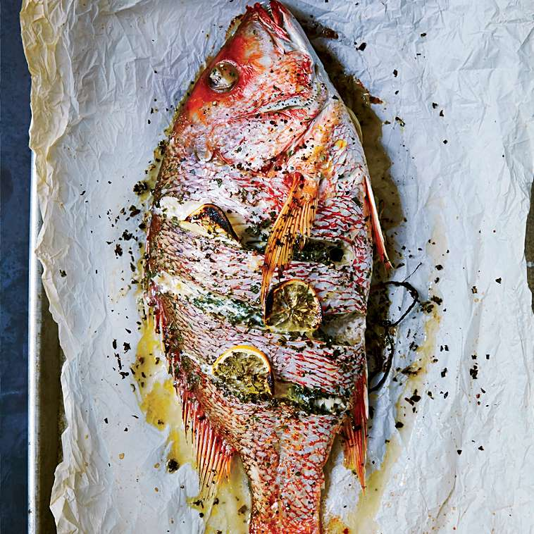

Roast Fish

Description
Simple yet delicious oven roast whole fish
Ingredients
- 1 whole fish -Snapper or your preferred fish
- 2 Limes
- 3 chopped pimento
- 2 tbs fine thyme
- salt
- black pepper
- 3 tbs chopped chives
- 3 tbs chopped onions
- 2 tbs garlic powder
- 2 tbs lemon pepper
- 1 tbs paprika
- 1 tbs cayenne pepper
- 1 bundle of chopped celery
- 1 bundle of chopped celery
- 1 bundle of culantro chopped
Steps
- Using one lime for washing, clean and wash whole fish with lime juice
- Season fish with pimento, culantro, fine thyme, salt to taste, black pepper to taste, chive, onion, garlic, lemon pepper, paprika, cayenne pepper and celery
- Add olive oil a piece of foil large enough to wrap the fish completely.s
- Place wrapped fish on a baking tray in a pre-heated oven of 375 degrees F. Cook for 30 minutes.
Back